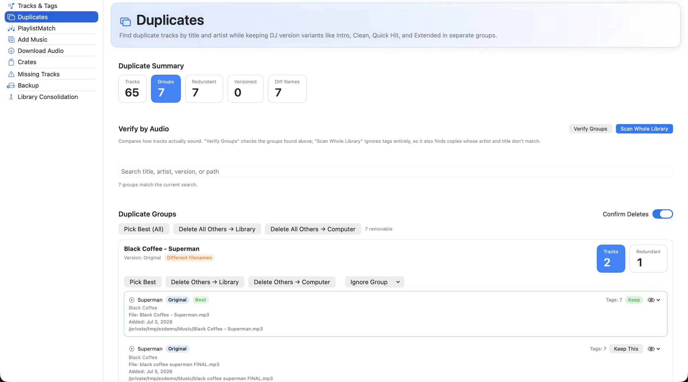

Pool downloads, re-rips and files dragged in from an old drive leave you with the same track several times over, usually under names that do not match. Filename comparison misses most of them.
EZLibrary compares the audio itself. It generates an acoustic fingerprint for each file, so two copies of the same recording group together regardless of what the tags or filenames say.

What it does
- Audio fingerprint matching. Offline fingerprinting with Chromaprint groups tracks by what they actually sound like, not by metadata.
- Whole-library scan. Scan everything in one go. Results are cached, so a repeat scan is fast.
- Version-aware. Intro, Clean, Dirty, Extended, Remix and Edit markers keep versions in separate groups — an Extended Mix is not a duplicate of the original.
- Completeness scoring. Each copy is scored on how complete its metadata is, so Pick Best keeps the one worth keeping.
- Two kinds of delete. Remove a copy from the Serato library only, or delete the file from your computer as well. Both are explicit choices.
- Crates stay intact. Removing a redundant copy reconciles the crates that referenced it instead of leaving a dead entry behind.
How to use it
-
Run a backup first
Duplicate cleanup deletes things. Take a full snapshot from the Backup tab before the first run.
-
Scan
Start a library scan and let the fingerprinting finish. Groups appear as they are found.
-
Review each group
Check the audio verification detail and the completeness score. Groups you are unsure about can be left alone.
-
Keep the best
Use Pick Best, or choose the keeper by hand, then delete the rest from the library or from disk.
Fingerprinting needs fpcalc, which ships inside the app — there is nothing to install. The optional AcoustID lookup needs your own free API key.
Related
Tracks & Tags
Browse the whole library, fix metadata in place, and fill thousands of empty fields in one pass.
Backup
Timestamped snapshots of your library, sized before you commit to them.
Library Consolidation
Pull music scattered across drives and folders into one place, without breaking a single crate.
Try it on your own library
Free and open source. Takes a backup before it touches anything.